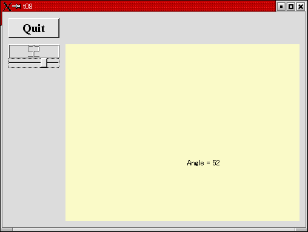
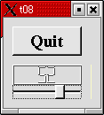
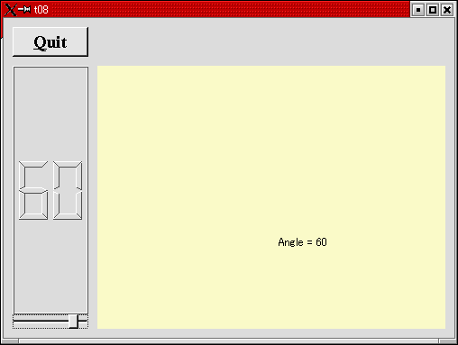
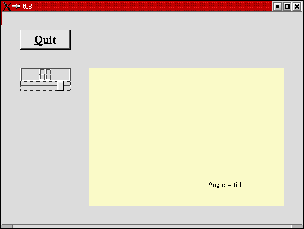
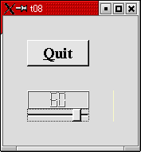
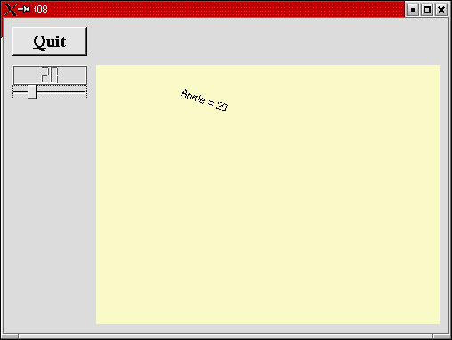

トップページ＞＞＞
「ぷろぐらみんぐ」目次＞＞＞
「Qt Tutorial Index Page」
Chapter 8: Preparing for Battle
初版作成：2002/01/03
- ソースコード
- 解説
- コンパイル・動作確認
- いじくりまわす
- 付録：lcdrange.h
- 付録：lcdrange.cpp
- 付録：cannon.h
- 付録：cannon.cpp
- 付録：main.cpp

長らくお待たせしました。いよいよミニゲームの土台づくりに取りかかります。
今回の例はQtウィジェットの備える基本的な描画機能についてのごく簡単な紹介となります。
また、二行のコードにより便利なキーボードインターフェイスを付け足してみました（ようするに備え付けのインターフェイス
を有効にしました、ってーこと）。
冒頭に実行画面のスナップショットを示します。
では、各ソースコードの役割分担です。
lcdrange.h：LCDRangeクラスの宣言部ヘッダーファイル。
lcdrange.cpp：LCDRangeクラスの実装部。
cannon.h：CannonFieldクラス（新規）の宣言部ヘッダーファイル。
cannon.cpp：CannonFieldクラスの実装部。
main.cpp：MyWidgetクラスとmain()関数。
今回も同じくmocコマンドを手動で打ち込む必要はありません。
目次に戻る
それでは各ファイルごとに、ポイント部分の解説を行っていきます。
lcdrange.h
このファイルはChapter 7とほとんど変わりません。新たに setRange() スロットが加わっただけです。
void setRange( int minVal, int maxVal );
これでLCDRangeの範囲指定ができるようになりました（今までは0...99で固定でした）。
lcdrange.cpp
コンストラクタで若干の変更がありますがそれについては後述します。
void LCDRange::setRange( int minVal, int maxVal )
{
if ( minVal < 0 || maxVal > 99 || minVal > maxVal ) {
qWarning( "LCDRange::setRange(%d,%d)\n"
"\tRange must be 0..99\n"
"\tand minVal must not be greater than maxVal",
minVal, maxVal );
return;
}
slider->setRange( minVal, maxVal );
}
setRange()はLCDRangeのQSliderの範囲を変更します。QLCDNumberには二桁の数値までしか表示させたくありませんので、
QLCDNumberのoverflowを防ぐためには 0 - 99 までの範囲に最小値(minVal)、最大値(maxVal)を制限する必要があります。
（それを言うなら -9 からでも・・・という意見は当然ですが、今回は手を抜いて無視。）
もし引数が不正なものであれば、Qtの qWarning() 関数を使って警告メッセージを表示、即座に終了します。
qWarning()はprintf()風の関数で、デフォルトではstderrに出力します。プログラマーは::qInstallMsgHandler()によって
オリジナルの出力ハンドラを追加できます。
cannon.h
CannonField は描画処理を自力で処理するためにカスタマイズするためのクラスです。
要するにQtの描画機能の練習用ってことです。
CannonFieldという名前の通り、最終的に「砲座(Cannon)」みたいなのを自力で描画して、ぐるぐる回します。
class CannonField : public QWidget
{
Q_OBJECT
public:
CannonField( QWidget *parent=0, const char *name=0 );
CannonFieldは QWidget から派生させます。
原文では続いて「 and we use the same idiom as for LCDRange.」と来てますが、良く訳せません・・・。
int angle() const { return ang; }
QSizePolicy sizePolicy() const;
public slots:
void setAngle( int degrees );
signals:
void angleChanged( int );
とりあえずCannonFieldクラスは砲座の角度を保持させます。んで、角度を保持するprivate: int ang; に対する
インターフェイスとしてLCDRangeと似たり寄ったりなシグナルとスロットを準備します。
protected:
void paintEvent( QPaintEvent * );
これはQWidgetから派生したウィジェットにおけるイベントハンドラを実装する二つ目の方法です（ちなみに一つ目は多分シグナルと
スロット）。この仮想関数はQtが自分自身を再描画する必要が発生したときに呼ばれます。
久しぶりのWin32API風に言うならWM_PAINTメッセージへの応答、ってとこでしょうか。
cannon.cpp
CannonField::CannonField( QWidget *parent, const char *name )
: QWidget( parent, name )
{
コンストラクタです。LCDRangeと同じパラメータの渡し方です。
ang = 45;
setPalette( QPalette( QColor( 250, 250, 200) ) );
}
コンストラクタでは角度を45度に初期化して、このウィジェットのパレットをカスタマイズしてます。
このパレットは指定された色を背景色として用い、それを基準として3Dっぽく表示するときの他の色も
適当に設定してくれます。（今回のウィジェットでは背景色とテキスト文字色しか使うことはないでしょう。）
void CannonField::setAngle( int degrees )
{
if ( degrees < 5 )
degrees = 5;
if ( degrees > 70 )
degrees = 70;
if ( ang == degrees )
return;
ang = degrees;
repaint();
emit angleChanged( ang );
}
この関数では砲座の角度を設定します。今回は引数となるdegreesに応じて5度から70度の範囲を設定できるように
しました。今回の例では範囲外の指定が来たときの警告やエラーは出さない事にしました。
新しい角度が古いのと同じだったときはすぐに戻るようにしました。角度が直前と異なるときのみ、angleChanged()シグナル
を送出するようにしています。
んで、その後新しい角度をセットしてウィジェットを再描画します。QWidget::repaint()関数はウィジェットをクリア
（通常はその背景色でウィジェット内部を塗りつぶす）した後、paintイベントをウィジェットに送ります。これにより
ウィジェットのpaintイベントに対する関数が発動されます。
実際問題として update() というのも再描画用にあるんですよ。ですが、repaint()は即座に再描画させるが
update()はupdate()がdisabledになっていたりウィジェットがhiddenしていたりすると再描画を行わないという
約束になっているようです。・・・これ、後でupdate()にしてみたらどう変わるか楽しみです。
ドキュメントを探っていると、再描画時にいったん背景をクリアした後塗りつぶすのですがそのときにイメージで
埋めることもできそうです。これもおもしろそうですね。
とにかく最終的にangleChanged()シグナルを送出して、角度が変更されたことを知らせませす。
emitはQt独自の拡張でその実体はマクロです。
void CannonField::paintEvent( QPaintEvent * )
{
QString s = "Angle = " + QString::number( ang );
QPainter p( this );
p.drawText( 200, 200, s );
}
これがペイントイベントハンドラの「書き初め」です。引数のQPaintEventには描画処理の詳細が格納されています。
QPaintEventにはウィジェット内で再描画されるべきリージョン矩形の情報（その型名もズバリ QRect, QRegion）が
格納されています。本当ならその内容を判断した上で描画処理をすべきなんでしょうが・・・初めてということもありますし、
手を抜いて全面描画することにしました。
今回のコードでは角度が変更されたとき、その角度をウィジェット内の固定された位置に表示します。最初にQStringで
角度を表示するのに使う文字列を作ります。んで、このウィジェット用のQPainterを作り、drawTextで先ほど作った文字列
を描画します。
なんだかWindowsでデバイスコンテクストを取得したのと、何となく似てますね。
っつーか、BCBやDelphiのCanvasにそっくり。
QPainterについては又後でいろいろ触れることになります。それだけ、いろいろなことができます。
main.cpp
#include "cannon.h"
新しいクラスをインクルードしてます。
class MyWidget: public QWidget
{
public:
MyWidget( QWidget *parent=0, const char *name=0 );
};
今回はトップレベルウィジェットでLCDRangeとCannonFieldを一つずつ生成しておきます。
LCDRange *angle = new LCDRange( this, "angle" );
コンストラクタでLCDRangeをセットアップします。
angle->setRange( 5, 70 );
LCDRangeの範囲を 5 - 70 に設定します。
CannonField *cannonField
= new CannonField( this, "cannonField" );
ここでCannonFieldを作っています。
connect( angle, SIGNAL(valueChanged(int)),
cannonField, SLOT(setAngle(int)) );
connect( cannonField, SIGNAL(angleChanged(int)),
angle, SLOT(setValue(int)) );
ここでLCDRangeの valueChanged() シグナルをCannonFieldの setAngle() スロットにconnectしています。これによって
ユーザーの操作によりLCDRangeが変更されたときは必ずCannonFieldの角度も更新されるようになります。
ここでさらに逆方向のconnectも行っています。すなわち二番目のconnect()でCannonFieldの angleChanged() シグナルで
LCDRangeの setValue() スロットが発動するようにもなっています。
今回の作例ではCannonFieldの角度を直接操作するような実装はしませんが、このような両方向のconnectを行うことにより
、将来いろいろ変更することがあってもこれら二つの値の同期を崩すことは無くなります。
これがコンポーネントプログラミング（とゆーかオブジェクト指向によるGUIプログラミング）と、カプセル化の便利な
使い方です。
CannonFieldの setAngle() で、値が本当に変更されたときのみangleChanged()を送出しているのがいかに重要かがここに
あります。もしLCDRange, CannonFieldの両方ともがこのチェックをしていないと、最初の値変更のが行われるとLCDRange
とCannonFieldの間で**Changed()の無限ループが発生してしまうからです。
QGridLayout *grid = new QGridLayout( this, 2, 2, 10 );
//2x2, 10 pixel border
今まで使ってきたQVBoxやらQGridやらは配置を完全自動化してくれる変わりにあまり融通が利かないウィジェットでもありました。
今回はゲームということもあり、もうちょっとサイズやら配置やらをカスタマイズできるQGridLayoutを使って
みます。
QGridLayoutはウィジェットではありません。Qtの解説本などではその名もレイアウトと呼ばれるシロモノ
です。というのは、QGridLayout自体はウインドウを生成したりはしないからです。QGridLayoutは升目状の配置、という
動作のみをまかなうための（悪い言い方をしてしまえば）ただのクラスです。
そのため、今回の作例のようにQGridLayoutは必ずQWidgetから派生したクラスの子ウィジェットとして用います。QGrid
Layout自体はウインドウを持たないため、使う場合は必ず親となるウィジェットに"張り付ける"形になるからです。
QGridLayoutのコンストラクタの引数は直感的には分かりづらい表現になっているため、作例のようにコメントを入れて
わかりやすくしています。
grid->addWidget( quit, 0, 0 );
左上の升目(0, 0)にQuitボタンを生成します。
grid->addWidget( angle, 1, 0, Qt::AlignTop );
続いてLCDRangeオブジェクトである angle を左下(1, 0)に生成します。んで、升目(cell)内の並びは上詰めです（こう
いった詰め型の指定などはQGirdでは難しく、QGridLayoutならではの機能です）。
grid->addWidget( cannonField, 1, 1 );
続いて砲座を（近いうちに）表示する（ことになるであろう）ためのCannonFieldオブジェクト、cannonFieldを右下の
升目(1, 1)に生成します。（この調子ですと右上のセルは空のままになりますが構いません。）
grid->setColStretch( 1, 10 );
ここでQGridLayoutに右側の列（カラム1）をサイズ変更可能(stretchable)にするように指示しています。左側の列（
カラム0）はサイズ変更可能にしていない（ストレッチファクターが0）ので、もしMyWidgetがサイズ変更されたとき
QGridLayoutは左側のカラムはサイズ変更せず、右側のカラムだけサイズを変更します。
angle->setValue( 60 );
ここで角度の初期値を設定しています。LCDRangeからのコネクションでCannonFieldに連鎖していることに注意して下さい。
angle->setFocus();
最後にキーボードフォーカスをangleオブジェクトにセットしています。デフォルトではこれによりキーボード入力は
まずLCDRangeウィジェットに流れるようになります。
ところでLCDRangeには何のkeyPressEvent()も実装していません。ので、この動作はあんまり使えそうではないように見
えます。が。LCDRangeのコンストラクタでこの一行が加わっていたことを思い出して下さい。
setFocusProxy( slider );
LCDRangeはこれによってフォーカスプロクシをQSliderクラスのオブジェクトである slider に設定しています。
これはですね。誰かがLCDRangeにキーボードフォーカスを設定した場合、sliderがとりあえずキーボードフォーカスを
監視しましょう、という事です。まさにsliderがキーボードフォーカスの"プロクシ（代理人）"となるわけです。
QSliderの方にはキーボードインターフェイスが備わっていますので、上の一行を加えるだけでとりあえずのキーボード
インターフェイスを実装できるという塩梅です。
目次に戻る
んじゃあ、コンパイルしてみましょう。
[fenjin@murasame t08]$ ls
cannon.cpp cannon.h lcdrange.cpp lcdrange.h main.cpp
[fenjin@murasame t08]$ progen -n t08 -o t08.pro
[fenjin@murasame t08]$ tmake -o Makefile t08.pro
[fenjin@murasame t08]$ make
g++ -c -pipe -Wall -W -O2 -DNO_DEBUG -I/usr/lib/qt/include -o cannon.o cannon.cpp
g++ -c -pipe -Wall -W -O2 -DNO_DEBUG -I/usr/lib/qt/include -o lcdrange.o lcdrange.cpp
g++ -c -pipe -Wall -W -O2 -DNO_DEBUG -I/usr/lib/qt/include -o main.o main.cpp
/usr/lib/qt/bin/moc cannon.h -o moc_cannon.cpp
g++ -c -pipe -Wall -W -O2 -DNO_DEBUG -I/usr/lib/qt/include -o moc_cannon.o moc_cannon.cpp
/usr/lib/qt/bin/moc lcdrange.h -o moc_lcdrange.cpp
g++ -c -pipe -Wall -W -O2 -DNO_DEBUG -I/usr/lib/qt/include -o moc_lcdrange.o moc_lcdrange.cpp
g++ -o t08 cannon.o lcdrange.o main.o moc_cannon.o moc_lcdrange.o -L/usr/lib/qt/lib -L/usr/X11R6/lib -lqt -lXext -lX11 -lm
[fenjin@murasame t08]$ ls
Makefile cannon.o lcdrange.o moc_cannon.cpp moc_lcdrange.o
cannon.cpp lcdrange.cpp main.cpp moc_cannon.o t08*
cannon.h lcdrange.h main.o moc_lcdrange.cpp t08.pro
んで、実行ファイル t08 を実行すると冒頭に示したようなウインドウが表示されるわけです。上部のQuitボタンをクリック
するとアプリケーションは終了します。
んで、QSliderには左右の矢印キーやHome, End, PageUp, PageDownに応じた処理が実装されてますので。まあ押してみますと
スライダも連動して動いてくれます。
ウインドウをリサイズしてみて下さい。左の列は全く大きさが変わりませんが、右のCannonFieldが変化します。
8ビット画面では背景色が化けるかもしれません。次のChapterではその辺の処理も入ってきます。
目次に戻る
とりあえず限界までウインドウサイズを小さくしました。左側の列は相変わらずですが、右側のCannonFieldがまさに１
ピクセルレベルまで小さくなってしまっています。

QPushButton の"Quit"の部分を"&Quit"にしてみました。これってキーボードショートカットで、Windowsと
同じ。
angleをQGridLayoutに加えるときのQt::AlignTopを省いてみました。angleが升目一杯に広がってしまいました。

LCDRangeのコンストラクタでsetFocusProxy()をコメントアウトしてみました。フォーカスが直接LCDRangeにかかってしまし、
カーソルキーの反応もありません。もちろん、QPushButtonのショートカットは有効のままです。
・・・さて。んじゃあ、CannonField::setAngle()中のrepaint()をupdate()に変更してみましょう。
ここいらあたりはWindowsとさして変わらず、要するに「ウインドウが隠れていたり、一部隠れていたり、アイコン化
状態から復帰するときなどにようやく再描画がかかる」類のものではないかと予想されます。
・・・結果、撃沈。
いえ、何が撃沈かと言いますと。今回みたいな仕様では、どのタイミングで再描画がかかったか感知できない事です。
現象としては「repaint()と同じく即刻再描画」してるようにしか見えないんですよ・・・。
QWidget::update()のQtドキュメントにはこんな事が書いてありました。
void QWidget::update () [slot]
Updates the widget unless updates are disabled or the widget is hidden.
Updating the widget will erase the widget contents and generate an appropriate paint event
for the invalidated region. The paint event is processed after the program has returned to
the main event loop. Calling update() many times in a row will generate a single paint event.
If the widgets sets the WRepaintNoErase flag, update() will not erase its contents.
素直に考えるならウィジェット内部を消去(erase)した後に適切なペイントイベントを、必要な再描画領域
を教えて発生させる、と言ったところでしょうか。ペイントイベントはプログラムがmainイベントループに戻って来た後
処理される、とも書かれています。このmainイベントループが何を示しているのかは現段階では不明です。
となってくると・・・update()はrepaint()のラッパー？ってこと？
？？
・・・よくわかりません。QtのQWidget::repaint()ドキュメントは・・・
void QWidget::repaint ( int x, int y, int w, int h, bool erase=TRUE ) [slot]
Repaints the widget directly by calling paintEvent() directly, unless updates
are disabled or the widgetis hidden.
Erases the widget area (x,y,w,h) if erase is TRUE.
If w is negative, it is replaced with width() - x. If h is negative, it is replaced
width height() - y.
Use repaint if your widget needs to be repainted immediately, for example when
doing some animation. In all other cases, update() is to be preferred. Calling
update() many times in a row will generate a single paint event.
Warning: If you call repaint() in a function which may itself be called from
paintEvent(), you may see infinite recursion. The update() function never generates recursion.
とあります。アニメーションみたいに素早い描画が期待されれるような場面ではrepaint()を用いた方がよいようです。
またpaintEvent()から呼ばれる関数内などでrepaint()を呼ばないように、とも書いてあります。そうすると再描画の
無限ループになってしまうようです。そういった場合はupdate()を使うと、循環というかループを引き起こさなくて済む
ようです。
次は・・・とりあえずQGridLayoutをせっかくですのでいじくってみましょう。
いっとう分かりやすそうな所でコンストラクタの数値を変更してみましょう。他の多くのQtウィジェットと同様にQGridLayout
のコンストラクタにも引数によっていくつかの種類があります。
QGridLayout ( QWidget * parent, int nRows = 1, int nCols = 1, int border=0, int space = -1, const char * name=0 )
QGridLayout ( int nRows = 1, int nCols = 1, int space = -1, const char * name=0 )
QGridLayout ( QLayout * parentLayout, int nRows = 1, int nCols = 1, int space = -1, const char * name=0 )
今回は第一引数がQWidgetですので、最初のコンストラクタを使用していることがわかります。ということは、作例の
コンストラクタは
QGridLayout *grid = new QGridLayout(this, 2, 2, 10);
だったので、borderというやつが10ピクセル（多分）と指定していたわけです。これを30にしてみました。

だいぶ余白が空いた感じがします。限界までウインドウサイズを小さくした場合も・・・

といった具合で、しっかり30ピクセル空いた状態で縮まってくれました。
ところでQGridLayout::addWidget()についてですが。
void QGridLayout::addWidget ( QWidget * w, int row, int col, int alignment = 0 )
んで、alignment=0ってゆーのは升目中一杯に広がる指示らしいです。
それと升目位置の指定ですが、行→列の順序になっていました。
drawText調べていたら、「文字を回転できないものか・・・」と思い立ちました。で調べてみると、描画矩形の座標空間
ごと回転させる仕組みがあるようです。ズバリQPainter::rotate()というやつです。他にもtranslate()とかscale()とか、
興味深そうなメソッドが存在しますがとりあえず今回はrotate()だけで遊んでみましょう。
テキストを眺め回していると、どうやら最低これだけの変更で回転できるようになるらしいです。
cannon.cpp, CannonField::paintEvent()の・・・
修正前：
QPainter p( this );
p.drawText( 200, 200, s );
修正後：
p.save();
p.rotate(ang);
p.drawText(100,0,s);
p.restore();
細かいことは抜きにして、とりあえずたったこれだけで文字が回転するようになりました。

といったところで、ネタもそれを思いついて実験する気力もつきたので今回はこれでおしまいにします。
どうせQPainterネタは続くChapterにもでてくるでしょうし・・・。それでは。
目次に戻る
#ifndef LCDRANGE_H
#define LCDRANGE_H
#include <qvbox.h>
class QSlider;
class LCDRange : public QVBox
{
Q_OBJECT
public:
LCDRange(QWidget *parent=0, const char *name=0);
int value() const;
public slots:
void setValue(int);
void setRange(int minVal, int maxVal);
signals:
void valueChanged(int);
private:
QSlider *slider;
};
#endif //LCDRANGE_H
目次に戻る
#include <qslider.h>
#include <qlcdnumber.h>
#include "lcdrange.h"
LCDRange::LCDRange(QWidget *parent, const char *name)
: QVBox(parent, name)
{
QLCDNumber *lcd = new QLCDNumber(2, this, "lcd");
slider = new QSlider(Horizontal, this, "slider");
slider->setRange(0,99);
slider->setValue(0);
connect(slider, SIGNAL(valueChanged(int)), lcd, SLOT(display(int)));
connect(slider, SIGNAL(valueChanged(int)), SIGNAL(valueChanged(int)));
setFocusProxy(slider);
}
int LCDRange::value() const
{
return slider->value();
}
void LCDRange::setValue(int value)
{
slider->setValue(value);
}
void LCDRange::setRange(int minVal, int maxVal)
{
if(minVal < 0 || maxVal > 99 || minVal > maxVal) {
qWarning("LCDRange::setRange(%d, %d)\n /
\t Range must be 0...99.\n /
\t and minVal must not greater than maxVal",
minVal, maxVal);
return;
}
slider->setRange(minVal, maxVal);
}
目次に戻る
#ifndef CANNON_H
#define CANNON_H
#include <qwidget.h>
class CannonField : public QWidget
{
Q_OBJECT
public:
CannonField(QWidget *parent=0, const char *name=0);
int angle() const { return ang; }
QSizePolicy sizePolicy() const;
public slots:
void setAngle(int degrees);
signals:
void angleChanged(int);
protected:
void paintEvent(QPaintEvent *);
private:
int ang;
};
#endif //CANNON_H
目次に戻る
#include "cannon.h"
#include <qpainter.h>
CannonField::CannonField(QWidget *parent,const char *name)
: QWidget(parent, name)
{
ang = 45;
setPalette(QPalette(QColor(250,250,200)));
}
void CannonField::setAngle(int degrees)
{
if(degrees < 5)
degrees = 5;
if(degrees > 70)
degrees = 70;
if(ang == degrees)
return;
ang = degrees;
repaint();
emit angleChanged(ang);
}
void CannonField::paintEvent(QPaintEvent *)
{
QString s = "Angle = " + QString::number(ang);
QPainter p(this);
p.drawText(200,200,s);
}
QSizePolicy CannonField::sizePolicy() const
{
return QSizePolicy(QSizePolicy::Expanding, QSizePolicy::Expanding);
}
目次に戻る
#include <qapplication.h>
#include <qpushbutton.h>
#include <qlcdnumber.h>
#include <qfont.h>
#include <qlayout.h>
#include "lcdrange.h"
#include "cannon.h"
class MyWidget : public QVBox
{
public:
MyWidget(QWidget *parent=0, const char *name=0);
};
MyWidget::MyWidget(QWidget *parent, const char *name)
: QVBox(parent, name)
{
QPushButton *quit = new QPushButton("&Quit", this, "quit");
quit->setFont(QFont("Times", 18, QFont::Bold));
connect(quit, SIGNAL(clicked()), qApp, SLOT(quit()));
LCDRange *angle = new LCDRange(this, "angle");
angle->setRange(5,70);
CannonField *cannonField = new CannonField(this, "cannonField");
connect(angle, SIGNAL(valueChanged(int)), cannonField, SLOT(setAngle(int)));
connect(cannonField, SIGNAL(angleChanged(int)), angle, SLOT(setValue(int)));
QGridLayout *grid = new QGridLayout(this, 2, 2, 10);
//2x2, 10 pixel border
grid->addWidget(quit,0,0);
grid->addWidget(angle, 1, 0, Qt::AlignTop);
grid->addWidget(cannonField, 1, 1);
grid->setColStretch(1,10);
angle->setValue(60);
angle->setFocus();
}
int main(int argc, char **argv)
{
QApplication a(argc, argv);
MyWidget w;
w.setGeometry(100,100,500,355);
a.setMainWidget(&w);
w.show();
return a.exec();
}
目次に戻る
トップページ＞＞＞
「ぷろぐらみんぐ」目次＞＞＞
「Qt Tutorial Index Page」